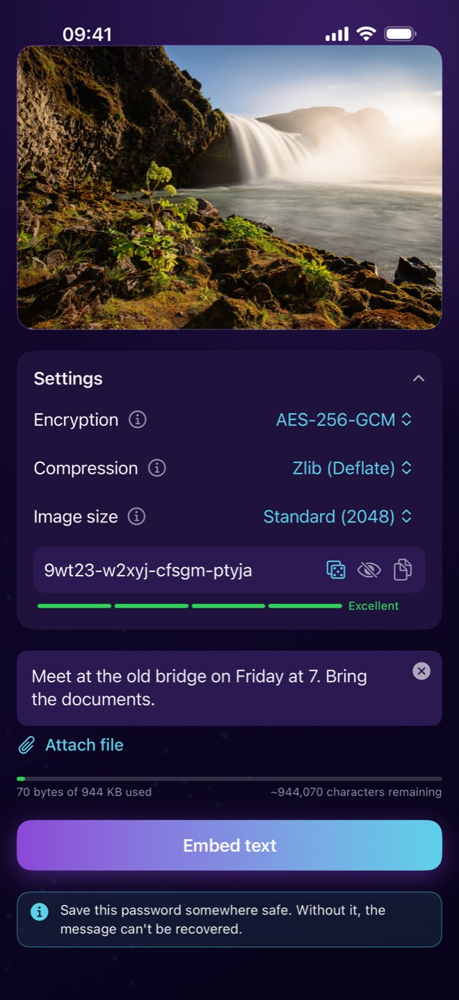
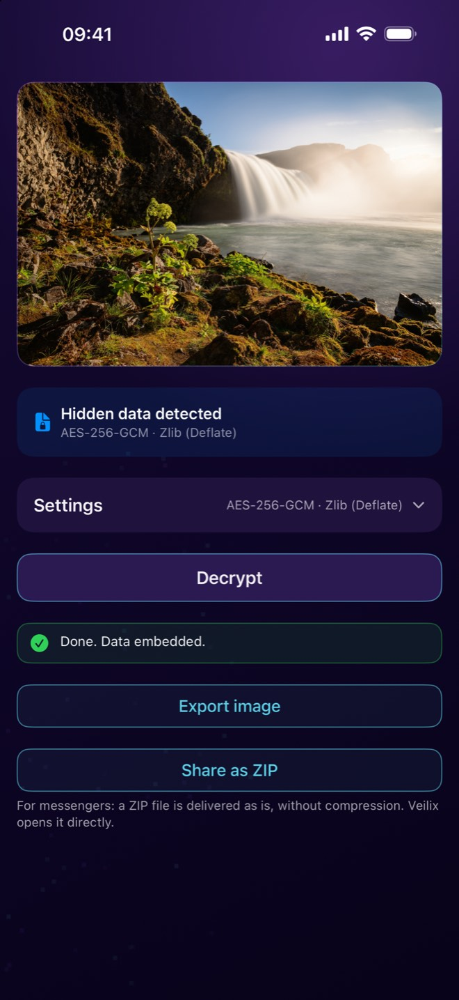
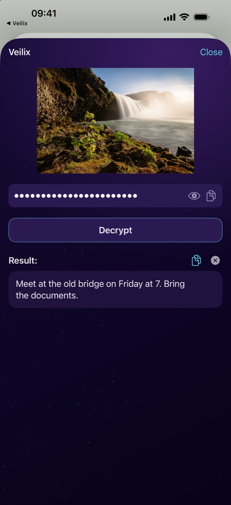
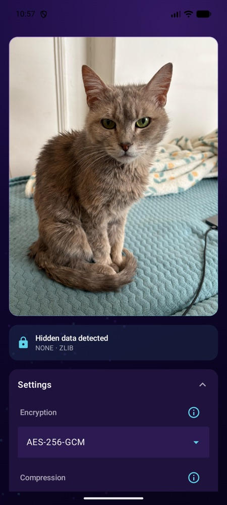
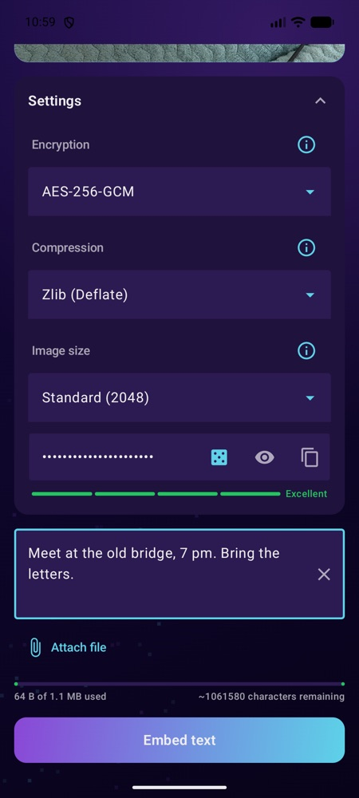
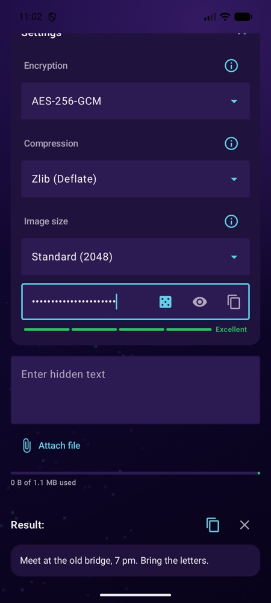

Veilix
Секреты внутри обычных фотографий.
- iPhone
- iPad
- Android
- без сети
- открытый исходный код
Veilix прячет текст или файл в обычной фотографии. Картинка выглядит как прежде и открывается где угодно, а прочитать скрытое может только тот, у кого есть пароль.



Veilix на iPhone: спрятать сообщение, отправить как ZIP, прочитать из меню «Поделиться».
Как это работает
- Выберите фото из галереи или «Файлов» либо сделайте новое.
- Введите сообщение или прикрепите файл и задайте пароль.
- Нажмите «Внедрить текст» или «Внедрить файл» и отправьте картинку файлом или как ZIP.
Получатель открывает картинку в Veilix, вводит пароль и читает сообщение. Картинки переходят между iPhone и Android в обе стороны.
Приватность
- Шифрование AES-256-GCM или ChaCha20-Poly1305, ключ из пароля через PBKDF2 с 600 000 раундов.
- В картинке с паролем нет метки, заголовка и длины, которые можно прочитать. Без пароля даже Veilix не отличит её от обычного фото.
- Биты разбросаны по пикселям, которые выбирает пароль, и пиксели меняются на ±1, а не перезаписываются.
- Всё происходит на устройстве: без аккаунта, серверов и аналитики. У Android-версии вообще нет доступа в интернет.
- Экспортированная картинка не несёт метаданных исходного фото, например геопозиции, и получает нейтральное имя вроде
IMG_1234.png. - Экран скрыт в переключателе приложений, а пароли и сообщения стираются после минуты в фоне.
Для мессенджеров
Мессенджеры пережимают фото, и это уничтожает скрытые данные. Кнопка «Отправить как ZIP» передаёт картинку без изменений, а Veilix открывает архив сразу, распаковывать ничего не нужно. Если картинку уже сжали по дороге, Veilix скажет об этом.
Android
Android-версия — открытый проект на GitHub под лицензией GPL-3.0. Подписанный APK лежит в Releases, нужен Android 10 или новее.



Veilix на Android: открыть фото, спрятать сообщение, прочитать его.
Открытый формат
Формат описан побайтно, с тестовыми картинками для проверки. По описанию можно написать совместимую программу и проверить, что Veilix делает именно то, что обещает.
Восстановить пароль нельзя. Если он потерян, сообщение тоже потеряно.
Пароль защищает содержимое. Специальный статистический анализ всё же может показать, что картинка изменена, особенно если данных много, поэтому прячьте не больше, чем нужно.
Veilix
Secrets inside ordinary photos.
- iPhone
- iPad
- Android
- offline
- open source
Veilix hides text or a file inside an ordinary photo. The picture looks the same and opens anywhere, and only someone with the password can read what's inside.
Veilix on iPhone: hide a message, send it as a ZIP, read it from the Share menu.
How it works
- Pick a photo from your library or Files, or take a new one.
- Type a message or attach a file, then set a password.
- Tap Embed, then send the image as a file or a ZIP.
The recipient opens it in Veilix, enters the password and reads the message. Images move between iPhone and Android in both directions.
Privacy
- AES-256-GCM or ChaCha20-Poly1305 encryption, with the key derived from the password by PBKDF2 with 600,000 rounds.
- A password-protected image has no readable marker, header or length. Without the password, even Veilix can't tell it from an ordinary photo.
- The bits are spread over pixels chosen by the password, and pixels change by ±1 instead of being overwritten.
- Everything happens on your device, with no account, no servers and no analytics. The Android version doesn't even have internet access.
- Exported images don't carry the original photo's metadata, such as location, and get neutral names like
IMG_1234.png. - The screen is hidden in the app switcher, and passwords and messages are cleared after a minute in the background.
Made for messengers
Messengers recompress photos, and that destroys hidden data. Share as ZIP sends the image untouched, and Veilix opens the ZIP directly, with nothing to unpack. If an image was already compressed on the way, Veilix tells you.
Android
The Android version is an open-source project on GitHub under GPL-3.0. A signed APK is in Releases; it needs Android 10 or newer.
Veilix on Android: open a photo, hide a message, read it back.
An open format
The format is documented byte by byte, with test images to check against. You can write a compatible program from the description and verify that Veilix does what it says.
There is no password recovery. If the password is lost, the message is lost too.
The password protects the contents. Specialized statistical analysis may still reveal that an image was altered, especially when it holds a lot of data, so hide no more than you need.